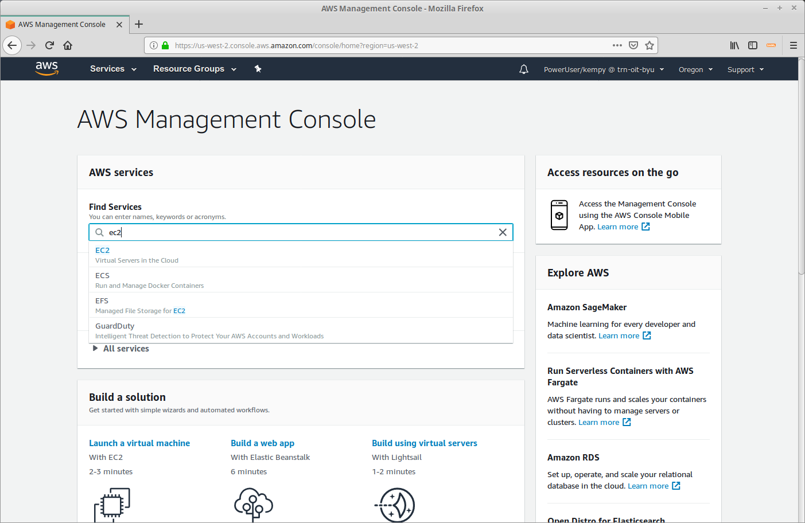
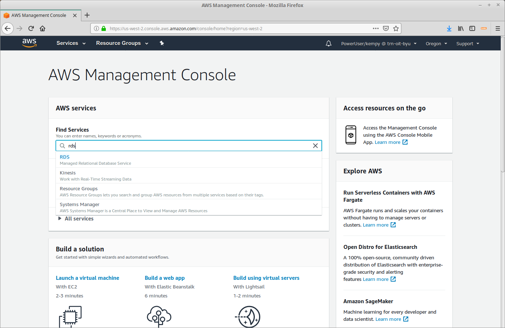
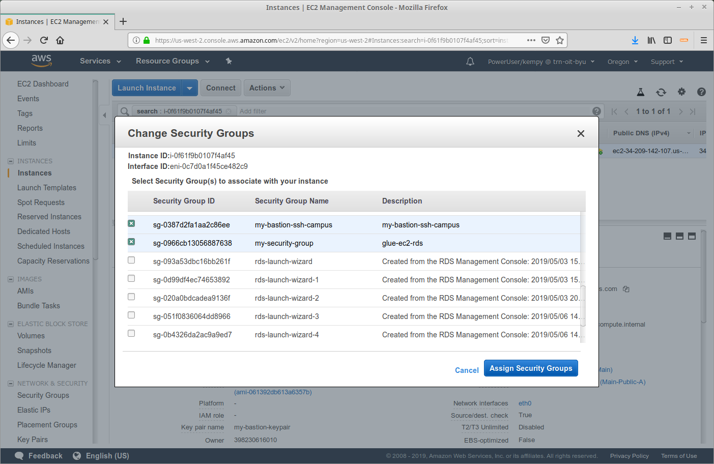
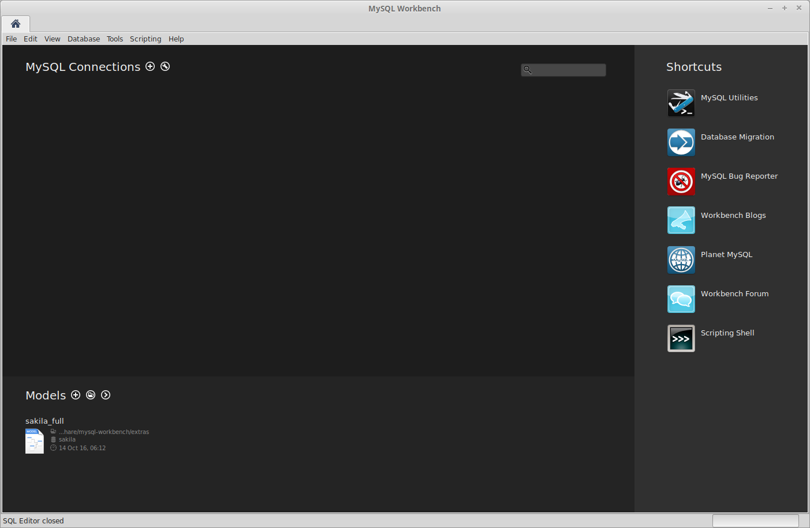

External Access to MySQL
Contents
Introduction
When OIT provision an account in AWS, we create a Main VPC (virtual private cloud) divided into a number of subnets. We categorize those subnets as follows:
- Public - resources placed in these subnets are accessible from the Internet.
- Private - resources placed in these subnets have Internet access via NAT (network address translation) but are not visible from the Internet.
- Data - resources placed in these subnets have no access to or from the Internet.
We recommend when creating a Database in AWS that you place it in one of the Data subnets for security purposes.
To connect to your database from an external client, you will need to set up a virtual machine (EC2) as a bastion host. This machine will only
need to run while you are accessing your database; it is recommended you shut it down while it is not needed to save money.
Step 1. Create a Self Referencing Security Groups in the Main VPC
In order for our EC2 (bastion) Instance to connect to our RDS (MySQL) Instance, we need to create a Security Group to allow this traffic.
- Go to the EC2 Dashboard

- Select "Security Groups" (on the left hand side).
- Select "Create Security Group".
- Give the security group a name and description. Make sure you add it to the Main VPC.
- Edit the "Inbound" rules of your Security Group - note the Id of the Security Group (eg. sg-0966cb13056887638).
- Add an inbound rule for MySQL/Aurora traffic allowing access from the security group id of this security group.
Security Group inbound rules can be thought of as 1) WHAT are we giving access to, and 2) WHO are we giving that access to.
We will add this Self Referencing group to our DB Instance because it has the WHAT.
We will add it to our EC2 instance to make it the WHO.
Step 2. Create a MySQL RDS Database
- Go to RDS

- Click "Create Database"
- Select MySQL
- Select the Production Level

- Choose the Instance Class

- Add the Instance Identifier, Username, and Password
- Place it in the Main VPC

- Create the Database
- Click "View DB Instance Details ""
- Wait
- Once the database is created, note the endpoint (eg. my-rds.crzc9xds3qkq.us-west-2.rds.amazonaws.com)
- To add our Self Referencing Security Group, click "Modify"
- Add the security group (select it from the drop-down)
- Choose "Apply Immediately" before clicking "Modify DB Instance"
Step 3. Create an EC2 (bastion) Instance
As we are creating our EC2 Instance in a Public Subnet we will have SSH (secure shell) access to it. We will need to use a Security Group to limit who has access.
- Go to the EC2 Dashboard
- Click "Launch Instance"
- Select the "Amazon Linux 2 AMI"
- Use the "t2.micro" then Click "Next: Configure Instance Details"
- Add it to a Public Subnet in the Main VPC then Click "Next: Add Storage"
- Click "Next: Add Tags"
- Give your instance a "Name" tag (and other tags as needed) then Click "Next: Configure Security Group"

- "Create a new security group" with access to SSH (port 22) only from BYU Campus IP Addresses (128.187.0.0/16) then Click "Review and Launch"
- Click "Launch"
- Create and Download a Key Pair - then Click "Launch Instance"
- Click "View Instances"
- Note the Public DNS (IPv4) (eg. ec2-34-209-142-107.us-west-2.compute.amazonaws.com)
- Click the "Connect" button to get information on how to SSH to your instance
- Open a terminal window (linux/mac), navigate to the directory into which you saved your key pair, and connect to your EC2 instance.
- Update (as needed)
- Install the mysql client (for testing purposes) - Logging into your mysql server will currently fail; we need to connect the Self Referencing Security Group to our instance.
- In the EC2 Dashboard, select your instance. Click "Actions" -> "Networking" -> "Change Security Groups"
- Make sure the ssh security group and the self referencing security group are selected.

- From your terminal window, test connecting to your database. (eg. mysql -h my-rds.crzc9xds3qkq.us-west-2.rds.amazonaws.com -u rootuser -p )
Step 4. Connect to MySQL via MySQL Workbench from my local machine
- On your local machine, open a terminal window and navigate to the directory of your key pair. Create a tunnel to your MySQL DB through your EC2 Instance:
ssh -N -L 3307:my-rds.crzc9xds3qkq.us-west-2.rds.amazonaws.com:3306 ec2-user@ec2-34-209-142-107.us-west-2.compute.amazonaws.com -i "my-bastion-keypair.pem"
The above example sets up an ssh tunnel listening on port 3307, which relays all traffic you your MySQL database on port 3306 via your EC2 Instance. Use Ctrl+C to close the connection.
- In a new terminal window on your local machine, test the connection to your MySQL instance:
mysql -u rootuser -p -h 127.0.0.1 -P 3307
The tunnel allows us to connect to our database as if it were running on our machine; 127.0.0.1 (or localhost) on port 3307
- Once we know our tunnel is working, we can set up our client - MySQL Workbench

- Add a new connection. Host: 127.0.0.1, Port: 3307, Username: rootuser (or whatever you used)
- Enter the Password
- It Works!!
- Open the new connection. (Any time you access this, you must have the tunnel up. To save cost, shut down the EC2 instance while you are not using the client.)
- GUI Database Access
{kind=link}
{kind=link}
{kind=link}
{kind=link}
{kind=link}
{kind=link}
{kind=link}
{kind=link}
{kind=link}
{kind=link}
{kind=link}
{kind=link}
{kind=link}
{kind=link}
{kind=link}
{kind=link}
{kind=link}
{kind=link}
{kind=link}
{kind=link}
{kind=link}
{kind=link}
{kind=link}
{kind=link}
{kind=link}
{kind=link}
{kind=link}
{kind=link}
{kind=link}
{kind=link}
{kind=link}
{kind=link}
{kind=link}
{kind=link}
{kind=link}
{kind=link}
{kind=link}
{kind=link}
{kind=link}
{kind=link}
{kind=link}
{kind=link}